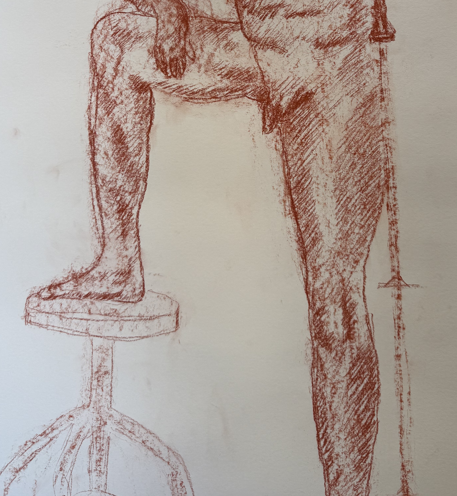

Residue
Process fragment
Surface marks, corrections, and erasure textures. Residue documents the process of revision and refinement.
Study Collection

Residue Study 01: Adhesive Marks

Residue Study 02: Worn Surface

Residue Study 03: Corrections

Residue Study 04: Layered Marks

Residue Study 05: Process Marks